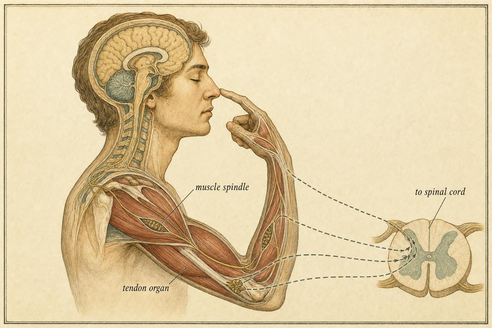
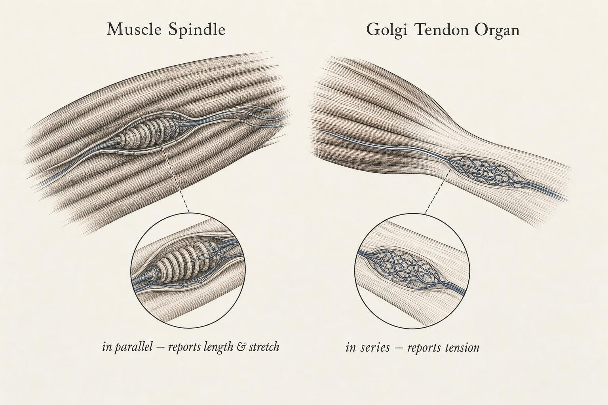
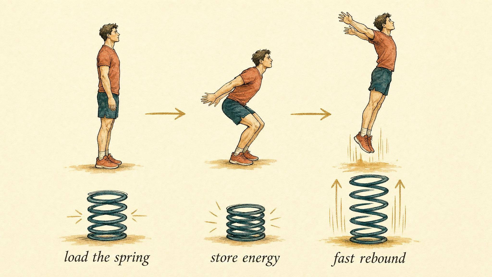

The Sixth Sense That Runs the Show
Proprioception, reflex loops, and the fast machinery that stabilizes movement before you can think about it.
Close your eyes and touch your nose. You just did something remarkable, and you noticed almost none of it happening. Your finger found your face without a mirror, without a glance, without a single conscious calculation of joint angles. The information that guided it, where your upper arm was pointing, how bent your elbow was, how fast the whole assembly was moving, flooded into your spinal cord and brain the entire time, and almost none of it reached awareness.
This is the sense that has no common name. It is not sight, hearing, touch, taste, or smell. It is the body's sense of itself: proprioception. For a learner working through this course, it is one of the most important senses you have never had reason to think about, and understanding it changes how you read a wobble, a stumble, a flinch, and a plateau in someone's movement, including your own.
Corey will help make it concrete. Corey is a 34-year-old trail runner who rolled an ankle on a rocky switchback eight months ago. The sprain healed according to every scan and every clinician who examined it. Strength came back within weeks. But Corey still feels unsteady on uneven ground, still catches themselves mid-stride on terrain that never used to register as difficult, and has started to suspect something is permanently wrong with the ankle itself. Corey is not a patient being diagnosed in this chapter and not a case being solved. Corey is a thread we will follow to keep the mechanisms honest, and by the end of the chapter you will understand Corey's ankle far better than the forum post that told them to just strengthen it more.
Why the sensory side matters now
In earlier chapters of this course we treated the body chiefly as a force producer: how a motor unit recruits fibers, how the nervous system grades tension, how a skill automates as it moves from effortful to fluent. Each of those chapters quietly assumed something that was never justified on its own: that the system knows what it is doing. That the force it commanded actually arrived. That the limb it moved ended up where it intended.
That assumption only holds because of a continuous, high-bandwidth stream of sensory information running underneath every action. A motor command is a bet. Proprioception is how the nervous system checks whether the bet paid off, and, crucially, how it corrects the bet mid-movement, faster than thought. Without it, force production is a message sent into a void. Loss of proprioception produces a condition called sensory ataxia, in which people who cannot feel the position of their own limbs cannot coordinate them, even when muscle strength is completely intact and vision is available to help (Proske & Gandevia, 2012).
So this chapter is the other half of the machine. Not how the body makes force, but how it trusts the force it makes, and how the fastest correction loops in the body operate entirely below conscious control, protecting and stabilizing a moving body before anyone knows anything is wrong.
It helps to notice how ordinary this sense feels precisely because it never announces itself. You do not experience a stream of numbers describing joint angles the way you experience a stream of colors or sounds. What you experience instead is a settled, background certainty about where your body is, a certainty so constant that its absence is the only time it becomes noticeable at all. A foot that lands on a step that is not quite where it was expected produces an unmistakable jolt of surprise before any conscious thought forms, and that jolt is proprioception being violated. The sense is not silent because it is unimportant. It is silent because it is working.

The two sensors that do most of the work
Proprioception draws on receptors in skin and joints, but two sensors embedded inside muscles and tendons carry most of the load for the questions that matter most for movement: how long is this muscle right now, and how hard is it pulling? Learn these two receptor types and you can reason through nearly everything that follows.
Muscle spindles, the stretch and length reporters
A muscle spindle is a small, specialized sensory organ woven in parallel among the ordinary working fibers of a muscle. Because it lies parallel to those fibers, it stretches exactly when the whole muscle stretches. Its job is to report two things continuously: how long the muscle currently is, which is its position, and how fast that length is changing, which is its velocity. The velocity sensitivity matters most. Spindles react most sharply to sudden stretch, which is precisely the signature of something going wrong, whether that is a joint giving way or a foot landing on unexpected ground.
Spindles are not passive rulers. They receive their own small motor supply, which pre-tensions them so the nervous system can adjust their sensitivity from moment to moment, turning the gain up when a task demands fine control and down when it does not (Proske & Gandevia, 2012). This is the first hint of a theme the chapter returns to repeatedly: the sensory system is tunable, and repeated practice tunes it.
The engineering here is worth appreciating in a bit more detail. A muscle spindle contains a handful of small, specialized muscle fibers called intrafusal fibers, wrapped in a sensory ending that fires when those fibers are stretched. The larger, force-producing fibers that make up the bulk of the muscle are called extrafusal fibers, and they run in parallel with the spindle, which is exactly why the spindle stretches whenever the whole muscle stretches. Two families of sensory fibers carry the spindle's message out: fast, primary Ia afferents that are exquisitely sensitive to velocity and give the reflex arc its speed, and slower, secondary group II afferents that report length more steadily over time. The spindle's own tiny motor fibers, called gamma motor neurons, contract the intrafusal fibers just enough to keep the sensor taut through a full range of motion, so it never goes slack and blind at the very moment it might be needed most. This is the mechanism behind the tunable sensitivity mentioned above, and it is also why a spindle can remain a precise instrument at a fully bent elbow and a fully straight one alike.
Golgi tendon organs, the tension reporters
The Golgi tendon organ (GTO) sits at the junction between muscle and tendon, arranged in series with the muscle fibers rather than parallel to them. Because it lies in the line of pull, it reports one variable with great fidelity: tension, meaning how much force is actually passing through the tendon, whether that force comes from the muscle contracting or from an external load stretching the tissue. A landmark review by Jami (1992) settled decades of confusion on this point. The GTO is an exquisitely sensitive detector of contraction, wired to fast-conducting Ib sensory fibers, and it signals the true mechanical force at the tendon rather than merely warning of impending damage.
An older textbook story, that the GTO functions only as a circuit breaker that shuts a muscle off near dangerous loads, is largely wrong and worth unlearning deliberately. GTOs report tension across the entire working range of a muscle and participate continuously in grading force, not only in emergencies.
Kröger and Watkins (2021) frame the division of labor cleanly: spindles are the length and stretch subtype of proprioceptor, GTOs are the tension subtype, and together they give the spinal cord a real-time picture of both the geometry and the loading of every working muscle, the two variables needed to correct a movement on the fly.
It is worth pausing on why a nervous system would evolve two separate sensors instead of one clever combined one. Length and tension are not interchangeable pieces of information, even though they are related. A muscle can be long and slack, long and under heavy load, short and slack, or short and under heavy load, and each of those four states calls for a different response. A single sensor could not distinguish them cleanly, but a spindle reporting length alongside a Golgi tendon organ reporting tension can. This is the same logic an engineer uses when building a control system with two independent gauges rather than one averaged reading. Redundancy is not waste here. It is resolution.

Joint position sense and the wider proprioceptive picture
Muscle spindles and Golgi tendon organs are the workhorses, but they are not the whole story. Receptors in joint capsules, ligaments, and skin contribute additional information, especially near the extremes of a joint's range, and the nervous system fuses all of these inputs into what researchers call joint position sense, the ability to know where a limb is in space without looking at it.
Joint position sense is usually tested in a simple, almost stubborn way: a limb is moved passively or actively to a target angle, the person is asked to hold that memory, and then asked to reproduce the same angle a short time later, without vision. The gap between the target and the reproduction is the error, and that error is a direct, measurable window into how well someone's proprioceptive system is functioning at that joint (Han et al., 2016). It is not a metaphor. It is a number, in degrees, and it changes with injury, with fatigue, and with training.
This is exactly the terrain Corey's ankle occupies. An ankle sprain does not just stretch or tear ligaments. It also damages or temporarily silences some of the mechanoreceptors living in those ligaments and the surrounding joint capsule, the very sensors that feed joint position sense at that joint. Strength can return to full within weeks, because muscle tissue and tendon repair on one timeline. Joint position sense often lags behind, because it depends on a population of small receptors that were directly injured and that recover, when they recover, on a different and less predictable timeline. This is the physiological reason a fully strong ankle can still feel unreliable on uneven ground long after an injury is declared healed on a scan. The strength test and the proprioception test measure two different systems, and often only one of them was checked.
It is also worth being precise about how joint position sense relates to the other senses that help with balance and orientation, because the three are frequently blurred together in casual conversation. Vision reports where surfaces and obstacles are relative to the whole body, but it is slow to update and useless in the dark or when looking elsewhere. The vestibular system, housed in the inner ear, reports the position and acceleration of the head in space, which is a different question entirely from where a knee or an ankle currently sits. Proprioception is the only one of the three that reports the relative position of one body segment to another, and it is the only one that keeps functioning identically whether the room is lit or dark, whether the head is still or turning. When vision is removed, a healthy nervous system leans harder on proprioception and the vestibular system to fill the gap, a process researchers describe as sensory reweighting. When proprioception itself is degraded, as it may be at Corey's ankle, there is no equally precise substitute waiting to take over. Vision can help a person watch their feet, but it cannot report tendon tension or joint angle with anything like a healthy receptor's fidelity, which is part of why an old ankle sprain shows up most clearly on uneven or unpredictable ground, exactly where vision is least able to compensate in time.
The reflex arc: correction without a controller
A sensor is only useful if it wires into an action. The elegance of the spinal cord is that many of these sensor-to-action connections are hardwired loops that never wait for the brain. Charles Sherrington (1906), whose experiments founded this entire field, called the reflex the fundamental unit of nervous integration, and named the synapse itself in the process. Everything modern neurophysiology added since, including the work carried from Eccles through Lundberg and beyond, refined that basic picture rather than replacing it (Hultborn, 2006).
The stretch reflex
The cleanest example is the one nearly every clinician has demonstrated on a patient's knee. Tap the tendon below the kneecap and the quadriceps muscle is briefly, suddenly stretched. The spindles inside it fire a burst. That signal travels along a sensory nerve into the spinal cord, crosses a single synapse onto the motor neuron of the same muscle, and travels back out, commanding the quadriceps to contract. The lower leg kicks. This is the stretch reflex, and its defining feature is speed. With only one synapse in the loop, it is close to the fastest response the body can produce, typically arriving in the muscle within about 25 to 50 milliseconds of the initial stretch (Hultborn, 2006; Han et al., 2016).
Why would this be wired in so directly? Because a sudden, unexpected stretch of a muscle usually means a load just appeared or a joint just gave way. The stretch reflex acts as an automatic hold your ground response. It resists sudden lengthening and stiffens the joint to keep the body upright. When someone catches themselves on an unexpected step down, the stretch reflex in the loaded leg has already fired before the drop is consciously registered at all.
Reciprocal inhibition
A reflex that only switched a muscle on would be clumsy. The quadriceps cannot extend the knee efficiently if the hamstrings are simultaneously fighting it. Sherrington's second great principle resolves this problem. The same sensory signal that excites the muscle being stretched also travels, through an inhibitory interneuron, to switch off the opposing muscle. This is reciprocal inhibition, agonist activation and antagonist relaxation, commanded by a single signal and coordinated entirely within the spinal cord, with no conscious traffic involved at all. It is the reason a healthy movement is clean rather than a tug of war between opposing muscles.
Hultborn (2006) situates reciprocal inhibition within a broader family of spinal circuits, including recurrent inhibition through Renshaw cells, presynaptic inhibition, and the flexor withdrawal reflex, all converging on the same interneurons where sensory feedback and descending commands from the brain meet and are negotiated. The resulting picture is not a brain that dictates and a spinal cord that simply obeys. It is a spinal cord that is itself a sophisticated processor, handling fast, local corrections so the brain is free to attend to strategy.
A second, slightly smarter loop
The single-synapse stretch reflex is not the only automatic response to a sudden stretch. Careful recordings of muscle activity after a perturbation typically show at least two distinct bursts. The first, often called the short-latency response, arrives around 25 to 50 milliseconds after the stretch begins and is generated by the simple spinal pathway already described. A second burst follows roughly 50 to 100 milliseconds after the stretch, too fast to be a fully deliberate, planned reaction, but slower than the first burst because it appears to loop up through additional spinal circuitry and, in some cases, through the motor cortex itself before returning to the muscle. This second, longer-latency response can be shaped by instruction and context in ways the pure short-latency reflex cannot. It is faster than voluntary reaction time but smarter than a single reflex arc, blending automatic speed with a small amount of task-dependent flexibility. Together the two responses illustrate a general principle worth carrying forward: the nervous system does not choose between fast and smart. It stacks several loops of increasing sophistication and decreasing speed on top of one another, so that the fastest available response always fires first while more considered corrections are still on their way.
Reading the simulator like a learner
Two things in that simulator matter for real understanding. First, notice the loop time: even at its slowest the stretch reflex closes in tens of milliseconds, while a deliberate, consciously chosen reaction takes on the order of 150 to 200 milliseconds. That gap is not a minor detail. It is the entire reason these loops exist. When the timescale of a threat is shorter than the timescale of thought, the only useful correction is one that does not involve thinking at all. The conscious override button is a lesson disguised as a game. There is no way to win it.
Second, notice what the two sliders actually changed. Spindle sensitivity changed how large a signal a given stretch produced. Reflex gain changed how strongly the muscle answered that signal. Both are adjustable in a real nervous system, and both are part of what people mean, loosely, when they call a joint stiff or loose. That distinction becomes the hinge for the next section.
Below awareness, and why that is a feature, not a flaw
It is tempting to treat the reflex machinery as primitive, a leftover from a simpler nervous system that conscious thought has since made obsolete. That gets the picture exactly backward. Proprioceptive information is not read off any single receptor. It is assembled from whole populations of sensory afferents and referred to a continuously updated internal map of where every segment of the body currently sits in space (Proske & Gandevia, 2012). Most of that computation is deliberately kept out of awareness, because awareness is slow, serial, and expensive. Nobody could walk across a room if they had to consciously monitor the position of both ankles, both knees, both hips, and the trunk simultaneously while also watching where they were going.
This is where the concept of feedforward versus feedback control earns its place. A purely feedback based system would wait for a sensory signal, such as this joint has drifted off target, and then issue a correction after the fact. That works, but it is slow, because sensory signals take real time to travel and real time to process. A purely feedforward system would issue a motor command based only on a plan, with no sensing at all, which is fast but blind to surprises. The nervous system does neither in isolation. Desmurget and Grafton (2000) describe how the brain instead relies on an internal forward model, a prediction of where a limb should be and how it should be moving, generated from a copy of the motor command itself. That prediction is compared continuously against incoming proprioceptive feedback, and small mismatches are corrected within the movement, before the movement is even finished, rather than only at its end. This is what allows a reach, a step, or a landing to be adjusted mid-flight with a delay far shorter than the time it would take to consciously notice an error and respond to it.
This connects directly to how a skill automates with practice. When a well learned movement is described as dropping out of conscious control, part of what has dropped out is exactly this proprioceptive monitoring and correction. A beginner consciously attends to limb position and over corrects with clumsy voluntary adjustments layered on top of the movement. Someone with more practice has handed that job to faster subconscious loops that have been retuned by repetition to make smaller, earlier, and better corrections automatically. Automation is not the absence of control. It is control moving to a faster, quieter layer of the nervous system.
That layer is trainable. Winter and colleagues (2022), reviewing seventy studies, found that proprioceptive training produced comparable gains in proprioceptive accuracy, around 48 percent on average, and in motor performance, around 47 percent, with active, multi-joint movement programs proving the most effective. Chen and colleagues (2024) add an important caveat. These gains are specific. The system adapts to whatever it is actually challenged with, and transfer to untrained conditions is limited. Someone who wants better balance on one leg under load needs to train balance on one leg under load. That capability does not arrive for free from a generic balance drill aimed at something else.
The forward model idea also explains a familiar, slightly strange experience: why it is almost impossible to tickle yourself. A self-produced touch is predicted by your own forward model before it lands, and the predicted sensation is subtracted from the actual sensation, which dampens the response. A touch from someone else carries no such prediction, so it lands at full strength. The same cancellation process is running constantly during ordinary movement, quietly filtering out the sensory consequences your own actions were expected to produce so that unexpected consequences, the ones that actually need a correction, stand out clearly against the background. A system that could not tell the difference between an expected sensation and a surprising one would be swamped by its own activity and would have no efficient way to flag the moments that matter.
To move things is all that mankind can do; for such the sole executant is muscle, whether in whispering a syllable or in felling a forest.
Charles Sherrington, The Integrative Action of the Nervous System (1906)
Stiffness, elastic energy, and the stretch-shortening cycle
Everything covered so far, sensitive spindles, a fast stretch reflex, tunable gain, tension-reporting Golgi tendon organs, converges on one of the most important phenomena in explosive movement: the stretch-shortening cycle (SSC).
The SSC is what happens whenever a muscle-tendon unit is rapidly stretched immediately before it shortens. Picture a countermovement jump. A person dips down first, the stretch or eccentric phase, then instantly reverses and drives upward, the shortening or concentric phase. That quick dip and drive produces a jump substantially higher than starting from a dead squat position and pushing up with no countermovement at all. Komi (2000), using in-vivo force measurements taken directly from human tendons, quantified how large this enhancement is and traced where it actually comes from.
Two engines drive the rebound
The first engine is elastic energy storage. When a muscle-tendon unit is rapidly stretched under load, the tendon and surrounding connective tissue deform like a spring and store mechanical energy. If the reversal into shortening happens fast enough, that stored energy returns to the movement instead of dissipating as heat. Wait too long at the bottom of the dip, and the spring leaks. The energy is gone before it can be used.
The second engine is the stretch reflex itself. The sudden eccentric stretch fires the muscle spindles in exactly the way a reflex hammer does, and the resulting short-latency reflex burst, what Komi labeled the M1 component, arrives to add extra muscle activation right at the transition from lengthening to shortening. Remarkably, Komi (2000) recorded very low voluntary electrical activity in the muscle during the concentric phase of fast SSC actions. A large share of the propulsive force in a well executed jump is not consciously commanded at all. It is reflexive. The nervous system is, quite literally, jumping on the person's behalf.
The stiffness tradeoff
Here is the decision that matters most for anyone thinking about reactive or explosive training. Both engines reward a fast, stiff rebound and punish a slow, soft one:
A stiffer system, meaning higher reflex gain, higher tendon stiffness, and a shorter ground contact time, returns more elastic energy and captures more of the reflex contribution. This is part of why elite sprinters and jumpers have extraordinarily brief ground contacts. But push stiffness too high with no countermovement at all, and the spring is never loaded in the first place. No stretch, no stored energy, no reflex burst. Go the other direction instead, with a deep, slow countermovement, and more raw force is generated through a longer range, but the spring bleeds out and the reflex contribution fades before the reversal even happens.
The sweet spot is a countermovement deep enough to load the system meaningfully but fast enough to reverse before the elastic energy and the reflex burst decay. That optimum is not a single universal number. It depends on an individual's tendon stiffness and reflex tuning, both of which shift with training over time. The next widget lets you find it.
None of this is confined to a jump on a force plate. Running is, at its core, a continuous chain of small stretch-shortening cycles at the ankle, knee, and hip, repeated dozens of times per minute, mile after mile. A runner's calf and Achilles tendon load and release elastic energy on every single stride, and the timing of that load and release is tuned, in part, by exactly the reflex and stiffness mechanisms described above. This is also why the system prepares in advance rather than waiting passively for ground contact. Electrical activity in the calf muscles rises just before the foot touches down, a feedforward adjustment that pre-tensions the muscle-tendon unit so it is ready to behave like a stiff spring the instant contact happens, rather than absorbing the first several milliseconds as slack, wasted motion. Anticipation and reflex are working together here, not competing: the feedforward pre-activation sets the stage, and the stretch reflex sharpens the response once the stretch actually arrives.

What the tuner teaches
Run it a few times and a pattern emerges that maps onto real movement. Depth alone does not win: the very deep, very slow combination stores force but loses the spring and the reflex. The very shallow combination is fast but never loads anything in the first place. The best outputs come from a moderate depth reversed quickly at high stiffness, the fast, stiff rebound Komi's data predict. This is the physiological reason reactive strength work is often cued with instructions like "quick off the ground" and "minimize contact time" rather than "sink lower."
It also explains why the stretch-shortening cycle cannot be separated from the reflex material earlier in the chapter. The reflex contribution bar in the tuner is not decoration. It represents a real, measurable share of the propulsive force, delivered below conscious control, and it only appears when the mechanical conditions, a fast stretch followed by a fast reversal, allow the spindles to do their job.
Putting it to work: four decision frames
None of this material needs to be memorized as a list of afferent fiber types to be useful. A handful of frames are enough to interpret what is observed in movement and to reason about what might help.
Frame 1: a wobble is a feedback-loop problem, not only a strength problem
When someone is unstable on a single leg or during a reactive task, the limiting factor is often proprioceptive accuracy and reflex tuning rather than muscular force. Strengthening a joint that is already well controlled but poorly sensed tends to yield less than training the sensing and correcting loops directly (Winter et al., 2022). The first question worth asking is simple: can this person actually feel the position they keep losing? A quiet way to probe this without any equipment is to watch how someone corrects a small perturbation rather than how much force they can produce in a straight line. A person with intact proprioception makes small, early, almost invisible adjustments. A person relying on vision and effortful attention instead makes larger, later, more visible corrections, because they are catching the error further downstream, after it has already grown.
Frame 2: specificity governs proprioceptive gains
Because adaptation is specific (Chen et al., 2024), a training condition needs to resemble the target condition in position, speed, and load. General balance work transfers poorly to a specific reactive demand. The challenge needs to match the goal, not merely resemble it in spirit. A standing balance exercise performed slowly on a stable floor with eyes open trains a real capability, but it is a different capability from staying upright on a rock that shifts underfoot at running speed, and the two should not be assumed to be interchangeable simply because both are labeled balance work.
Frame 3: for explosive output, protect the timescale
Elastic energy and the reflex burst both decay with time. In any drill built around the stretch-shortening cycle, contact time is a primary variable, not an afterthought. A drill that allows contacts to get long has quietly turned into a different exercise, one that trains slow concentric force instead of reactive stiffness. This is why simple, low-cost measures like watching or timing ground contact often carry more information about what a drill is actually training than the height of the jump alone.
Frame 4: respect what cannot be consciously overridden
The fast loops fire before intention does. Nobody can be cued to react faster than their own stretch reflex. The reflex can only be retuned gradually, through repeated, appropriate exposure. This reframes progressive reactive training as sensory-motor tuning, gradually teaching the loops to permit stiffer, faster responses, rather than as simple strength accumulation. Progress in this domain often looks less like a bigger number on a single test and more like a system that needs fewer, smaller, and earlier corrections to handle the same demand.
The line we will not cross: education versus diagnosis
Before closing with Corey's case, it is worth naming the boundary that governs how this material should be used. Everything in this chapter explains mechanism: how a sensor is built, how a loop is wired, how a rhythm of stretch and reflex produces force. None of it is a diagnosis, and none of it is a substitute for one.
Consider Corey's lingering unsteadiness. It is tempting, after reading this chapter, to conclude confidently that the ankle sprain damaged joint position sense and that the fix is simply more single-leg balance work performed with eyes closed on an unstable surface. That conclusion might be directionally reasonable, and the mechanism behind it is real. But whether that particular ankle has a lingering mechanical instability, a nerve injury, an unrelated cause for the sensation, or something that genuinely needs imaging or a hands-on examination is not something this chapter, or any course, can determine from a description on a page. Persistent instability after an injury that was declared healed is exactly the kind of finding that belongs in front of a qualified clinician, not in front of a self-directed drill program built from a course.
Case: Corey and the sense that would not settle
Run Corey's situation through this chapter and the confusion mostly resolves, not into a diagnosis, which is not this course's to give, but into a clearer set of questions than either the forum or the gadget offered. Start with the mismatch between strength and stability. Strength and joint position sense are different systems that recover on different timelines, and an ankle sprain routinely damages the small mechanoreceptors that feed joint position sense even when it leaves muscle tissue largely intact (Han et al., 2016). A fully strong ankle that still feels unreliable on uneven ground is not a contradiction. It is exactly what an unresolved proprioceptive deficit looks like once the strength half of the picture has already recovered.
Move to the claim that the nerves are damaged for good. Nothing in Corey's situation supports that conclusion, and nothing in this chapter does either. Proprioceptive acuity is measurably trainable, and multi-joint, active training programs produced meaningful average gains in both proprioceptive accuracy and motor performance across the seventy studies reviewed by Winter and colleagues (2022). A lingering deficit eight months out is a reason to train the sensing and correcting loops directly, on ground and tasks that resemble the actual problem, not a life sentence.
That specificity point matters for the six-week gadget promise too. Chen and colleagues (2024) found that proprioceptive training gains are specific to the conditions actually trained, with limited transfer to untrained conditions. A device that trains standing balance in a controlled indoor setting is not obviously training the fast, unpredictable, multi-directional demands of a rocky switchback at running speed. If Corey wants confidence back on technical trail terrain, the training needs to resemble technical trail terrain in position, speed, and unpredictability, not merely produce a number on an app.
Here is where the boundary from the previous section does real work. Nothing above tells Corey whether the ankle has a genuine mechanical laxity, a nerve injury that needs specific attention, or a proprioceptive deficit that will resolve with appropriate graded exposure. Persistent instability eight months after an injury that scans call healed is worth a hands-on evaluation by a clinician who can test the joint directly, not a conclusion reached from a chapter. What this chapter offers Corey is not a verdict. It is a working model: strength and joint position sense are not the same thing, proprioceptive training is real and specific, and a symptom that persists this long deserves a professional look rather than a subscription.
It is worth naming what changed in how Corey talks about the ankle, because it is the real deliverable of this chapter. Before, the story was binary: either the ankle was broken forever, or the next gadget would fix it. After, the story has texture. Corey now understands that a scan can be clean while a specific population of small receptors is still under-recovered, that this is measurable rather than mysterious, that appropriate graded exposure on varied and unpredictable terrain is the kind of stimulus proprioceptive training actually responds to, and that persistent symptoms this far out are exactly the kind of finding worth bringing to a clinician who can examine the joint directly rather than a kind of finding to self-manage indefinitely with a subscription. That shift, from a story with one bleak explanation to a set of accurate, checkable questions, is what a working mechanistic model buys a person, whether or not the ankle turns out to need more time, more training, or a professional's closer look.
Key Takeaways
- Proprioception is the body's sense of itself, mostly subconscious, and movement is untrustworthy without it, as sensory ataxia demonstrates.
- Muscle spindles lie parallel to fibers and report muscle length and the velocity of stretch; Golgi tendon organs lie in series and report tension. Together they give the spinal cord real-time geometry and loading.
- Joint position sense, the ability to know a limb's position without vision, draws on joint, ligament, and skin receptors in addition to spindles and Golgi tendon organs, and it can lag behind strength after an injury.
- The stretch reflex crosses a single synapse, making it faster than conscious reaction; reciprocal inhibition simultaneously relaxes the antagonist so movement stays clean (Sherrington's principle).
- Movement blends feedforward and feedback control through an internal forward model that predicts a limb's state and corrects it mid-movement, which is what lets skilled action run below awareness on purpose.
- The stretch-shortening cycle enhances explosive output through two engines: stored elastic energy and a short-latency stretch-reflex burst, much of it not consciously commanded (Komi, 2000).
- The proprioceptive system is plastic and trainable, but adaptations are specific to the trained condition, and persistent, unexplained instability after an injury belongs with a qualified clinician, not a self-directed fix.
We now have both halves of the machine: force production and the sensory feedback that steers it. Chapter 6 assembles them into whole coordinated actions, examining how multiple joints and muscles are timed and sequenced into a single fluent movement. The proprioceptive loops introduced here are the glue of that coordination, and understanding them will make Chapter 7's discussion of how fatigue degrades control far sharper: when the sensors dull and the loops slow, coordination is often the first thing to go.
References
Chen, S., Entakli, J., Bisiaux, M., Nicot, E., & Simoneau-Buessinger, E. (2024). A systematic review of the learning dynamics of proprioception training: Specificity, acquisition, retention, and transfer. Neuroscience & Biobehavioral Reviews. https://pmc.ncbi.nlm.nih.gov/articles/PMC10847967/
Desmurget, M., & Grafton, S. (2000). Forward modeling allows feedback control for fast reaching movements. Trends in Cognitive Sciences, 4(11), 423-431. https://doi.org/10.1016/S1364-6613(00)01537-0
Han, J., Waddington, G., Adams, R., Anson, J., & Liu, Y. (2016). Assessing proprioception: A critical review of methods. Journal of Sport and Health Science, 5(1), 80-90. https://doi.org/10.1016/j.jshs.2014.10.004
Hultborn, H. (2006). Spinal reflexes, mechanisms and concepts: From Eccles to Lundberg and beyond. Progress in Neurobiology, 78(3-5), 215-232. https://doi.org/10.1016/j.pneurobio.2006.04.001
Jami, L. (1992). Golgi tendon organs in mammalian skeletal muscle: Functional properties and central actions. Physiological Reviews, 72(3), 623-666. https://doi.org/10.1152/physrev.1992.72.3.623
Komi, P. V. (2000). Stretch-shortening cycle: A powerful model to study normal and fatigued muscle. Journal of Biomechanics, 33(10), 1197-1206. https://doi.org/10.1016/s0021-9290(00)00064-6
Kröger, S., & Watkins, B. (2021). Regulating muscle spindle and Golgi tendon organ proprioceptor phenotypes. Current Opinion in Physiology, 20, 88-95. https://www.sciencedirect.com/science/article/abs/pii/S2468867320301437
Proske, U., & Gandevia, S. C. (2012). The proprioceptive senses: Their roles in signaling body shape, body position and movement, and muscle force. Physiological Reviews, 92(4), 1651-1697. https://doi.org/10.1152/physrev.00048.2011
Sherrington, C. S. (1906). The integrative action of the nervous system. Yale University Press. https://books.google.com/books/about/The_Integrative_Action_of_the_Nervous_Sy.html?id=1iOkngEACAAJ
Winter, L., Huang, Q., Sertic, J. V. L., & Konczak, J. (2022). The effectiveness of proprioceptive training for improving motor performance and motor dysfunction: A systematic review. Frontiers in Rehabilitation Sciences, 3, 830166. https://doi.org/10.3389/fresc.2022.830166